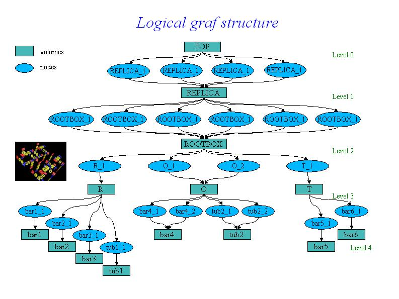

class TGeoManager: public TNamed
General architecture The new ROOT geometry package is a tool designed for building, browsing, tracking and visualizing a detector geometry. The code is independent from other external MC for simulation, therefore it does not contain any constraints related to physics. However, the package defines a number of hooks for tracking, such as media, materials, magnetic field or track state flags, in order to allow interfacing to tracking MC's. The final goal is to be able to use the same geometry for several purposes, such as tracking, reconstruction or visualization, taking advantage of the ROOT features related to bookkeeping, I/O, histograming, browsing and GUI's. The geometrical modeler is the most important component of the package and it provides answers to the basic questions like "Where am I ?" or "How far from the next boundary ?", but also to more complex ones like "How far from the closest surface ?" or "Which is the next crossing along a helix ?". The architecture of the modeler is a combination between a GEANT-like containment scheme and a normal CSG binary tree at the level of shapes. An important common feature of all detector geometry descriptions is the mother-daughter concept. This is the most natural approach when tracking is concerned and imposes a set of constraints to the way geometry is defined. Constructive solid geometry composition is used only in order to create more complex shapes from an existing set of primitives through boolean operations. This feature is not implemented yet but in future full definition of boolean expressions will be supported. Practically every geometry defined in GEANT style can be mapped by the modeler. The basic components used for building the logical hierarchy of the geometry are called "volumes" and "nodes". Volumes (sometimes called "solids") are fully defined geometrical objects having a given shape and medium and possibly containing a list of nodes. Nodes represent just positioned instances of volumes inside a container volume and they are not directly defined by user. They are automatically created as a result of adding one volume inside other or dividing a volume. The geometrical transformation hold by nodes is always defined with respect to their mother (relative positioning). Reflection matrices are allowed. All volumes have to be fully aware of their containees when the geometry is closed. They will build aditional structures (voxels) in order to fasten-up the search algorithms. Finally, nodes can be regarded as bidirectional links between containers and containees objects. The structure defined in this way is a graph structure since volumes are replicable (same volume can become daughter node of several other volumes), every volume becoming a branch in this graph. Any volume in the logical graph can become the actual top volume at run time (see TGeoManager::SetTopVolume()). All functionalities of the modeler will behave in this case as if only the corresponding branch starting from this volume is the registered geometry./*  */
A given volume can be positioned several times in the geometry. A volume can be divided according default or user-defined patterns, creating automatically the list of division nodes inside. The elementary volumes created during the dividing process follow the same scheme as usual volumes, therefore it is possible to position further geometrical structures inside or to divide them further more (see TGeoVolume::Divide()). The primitive shapes supported by the package are basically the GEANT3 shapes (see class TGeoShape), arbitrary wedges with eight vertices on two parallel planes. All basic primitives inherits from class TGeoBBox since the bounding box of a solid is essential for the tracking algorithms. They also implement the virtual methods defined in the virtual class TGeoShape (point and segment classification). User-defined primitives can be direcly plugged into the modeler provided that they override these methods. Composite shapes will be soon supported by the modeler. In order to build a TGeoCompositeShape, one will have to define first the primitive components. The object that handle boolean operations among components is called TGeoBoolCombinator and it has to be constructed providing a string boolean expression between the components names. Example for building a simple geometry :rootgeom.C //
///* */
TGeoManager - the manager class for the geometry package. TGeoManager class is embedding all the API needed for building and tracking a geometry. It defines a global pointer (gGeoManager) in order to be fully accessible from external code. The mechanism of handling multiple geometries at the same time will be soon implemented. TGeoManager is the owner of all geometry objects defined in a session, therefore users must not try to control their deletion. It contains lists of media, materials, transformations, shapes and volumes. Logical nodes (positioned volumes) are created and destroyed by the TGeoVolume class. Physical nodes and their global transformations are subjected to a caching mechanism due to the sometimes very large memory requirements of logical graph expansion. The caching mechanism is triggered by the total number of physical instances of volumes and the cache manager is a client of TGeoManager. The manager class also controls the painter client. This is linked with ROOT graphical libraries loaded on demand in order to control visualization actions. Rules for building a valid geometry A given geometry can be built in various ways, but there are mandatory steps that have to be followed in order to be validated by the modeler. There are general rules : volumes needs media and shapes in order to be created, both container an containee volumes must be created before linking them together, and the relative transformation matrix must be provided. All branches must have an upper link point otherwise they will not be considered as part of the geometry. Visibility or tracking properties of volumes can be provided both at build time or after geometry is closed, but global visualization settings (see TGeoPainter class) should not be provided at build time, otherwise the drawing package will be loaded. There is also a list of specific rules : positioned daughters should not extrude their mother or intersect with sisters unless this is specified (see TGeoVolume::AddNodeOverlap()), the top volume (containing all geometry tree) must be specified before closing the geometry and must not be positioned - it represents the global reference frame. After building the full geometry tree, the geometry must be closed (see TGeoManager::CloseGeometry()). Voxelization can be redone per volume after this process. Below is the general scheme of the manager class./* */
An interactive session Provided that a geometry was successfully built and closed (for instance the previous example $ROOTSYS/tutorials/geom/rootgeom.C ), the manager class will register itself to ROOT and the logical/physical structures will become immediately browsable. The ROOT browser will display starting from the geometry folder : the list of transformations and media, the top volume and the top logical node. These last two can be fully expanded, any intermediate volume/node in the browser being subject of direct access context menu operations (right mouse button click). All user utilities of classes TGeoManager, TGeoVolume and TGeoNode can be called via the context menu./*
 */
*/
--- Drawing the geometry Any logical volume can be drawn via TGeoVolume::Draw() member function. This can be direcly accessed from the context menu of the volume object directly from the browser. There are several drawing options that can be set with TGeoManager::SetVisOption(Int_t opt) method : opt=0 - only the content of the volume is drawn, N levels down (default N=3). This is the default behavior. The number of levels to be drawn can be changed via TGeoManager::SetVisLevel(Int_t level) method./*
 */
*/
opt=1 - the final leaves (e.g. daughters with no containment) of the branch
starting from volume are drawn down to the current number of levels.
WARNING : This mode is memory consuming
depending of the size of geometry, so drawing from top level within this mode
should be handled with care for expensive geometries. In future there will be
a limitation on the maximum number of nodes to be visualized.
/*
 */
*/
opt=2 - only the clicked volume is visualized. This is automatically set by
TGeoVolume::DrawOnly() method
opt=3 - only a given path is visualized. This is automatically set by
TGeoVolume::DrawPath(const char *path) method
The current view can be exploded in cartesian, cylindrical or spherical
coordinates :
TGeoManager::SetExplodedView(Int_t opt). Options may be :
- 0 - default (no bombing)
- 1 - cartesian coordinates. The bomb factor on each axis can be set with
TGeoManager::SetBombX(Double_t bomb) and corresponding Y and Z.
- 2 - bomb in cylindrical coordinates. Only the bomb factors on Z and R
are considered
/*
 */
*/
- 3 - bomb in radial spherical coordinate : TGeoManager::SetBombR() Volumes themselves support different visualization settings : - TGeoVolume::SetVisibility() : set volume visibility. - TGeoVolume::VisibleDaughters() : set daughters visibility. All these actions automatically updates the current view if any. --- Checking the geometry Several checking methods are accessible from the volume context menu. They generally apply only to the visible parts of the drawn geometry in order to ease geometry checking, and their implementation is in the TGeoChecker class from the painting package. 1. Checking a given point. Can be called from TGeoManager::CheckPoint(Double_t x, Double_t y, Double_t z). This method is drawing the daughters of the volume containing the point one level down, printing the path to the deepest physical node holding this point. It also computes the closest distance to any boundary. The point will be drawn in red./* */
2. Shooting random points. Can be called from TGeoVolume::RandomPoints() (context menu function) and it will draw this volume with current visualization settings. Random points are generated in the bounding box of the top drawn volume. The points are classified and drawn with the color of their deepest container. Only points in visible nodes will be drawn./* */
3. Raytracing. Can be called from TGeoVolume::RandomRays() (context menu of volumes) and will shoot rays from a given point in the local reference frame with random directions. The intersections with displayed nodes will appear as segments having the color of the touched node. Drawn geometry will be then made invisible in order to enhance rays./* */
Function Members (Methods)
public:
protected:
| TGeoManager(const TGeoManager&) | |
| virtual void | TObject::DoError(int level, const char* location, const char* fmt, va_list va) const |
| void | TObject::MakeZombie() |
| TGeoManager& | operator=(const TGeoManager&) |
private:
| void | Init() |
| Bool_t | InitArrayPNE() const |
| Bool_t | InsertPNEId(Int_t uid, Int_t ientry) |
| Bool_t | IsLoopingVolumes() const |
| void | SetLoopVolumes(Bool_t flag = kTRUE) |
| void | UpdateElements() |
| void | Voxelize(Option_t* option = 0) |
Data Members
public:
| enum TObject::EStatusBits { | kCanDelete | |
| kMustCleanup | ||
| kObjInCanvas | ||
| kIsReferenced | ||
| kHasUUID | ||
| kCannotPick | ||
| kNoContextMenu | ||
| kInvalidObject | ||
| }; | ||
| enum TObject::[unnamed] { | kIsOnHeap | |
| kNotDeleted | ||
| kZombie | ||
| kBitMask | ||
| kSingleKey | ||
| kOverwrite | ||
| kWriteDelete | ||
| }; |
public:
| vector<ThreadData_t*> | fThreadData | ! Thread private data |
| Int_t | fThreadSize | ! Length of thread data |
protected:
| TString | TNamed::fName | object identifier |
| TString | TNamed::fTitle | object title |
| static Bool_t | fgLock | ! Lock preventing a second geometry to be loaded |
| static Int_t | fgVerboseLevel | ! Verbosity level for Info messages (no IO). |
private:
| Bool_t | fActivity | ! switch ON/OFF volume activity (default OFF - all volumes active)) |
| TObjArray* | fArrayPNE | ! array of phisical node entries |
| UChar_t* | fBits | ! bits used for voxelization |
| TGeoShape* | fClippingShape | ! clipping shape for raytracing |
| Bool_t | fClosed | ! flag that geometry is closed |
| TGeoNavigator* | fCurrentNavigator | ! current navigator |
| TVirtualGeoTrack* | fCurrentTrack | ! current track |
| TGeoVolume* | fCurrentVolume | ! current volume |
| Bool_t | fDrawExtra | ! flag that the list of physical nodes has to be drawn |
| TGeoElementTable* | fElementTable | ! table of elements |
| Int_t | fExplodedView | exploded view mode |
| TGeoHMatrix* | fGLMatrix | matrix to be used for view transformations |
| TObjArray* | fGShapes | ! list of runtime shapes |
| TObjArray* | fGVolumes | ! list of runtime volumes |
| THashList* | fHashGVolumes | ! hash list of group volumes providing fast search |
| THashList* | fHashPNE | -> hash list of phisical node entries |
| THashList* | fHashVolumes | ! hash list of volumes providing fast search |
| Bool_t | fIsGeomReading | ! flag set when reading geometry |
| Bool_t | fIsNodeSelectable | ! flag that nodes are the selected objects in pad rather than volumes |
| Int_t* | fKeyPNEId | [fSizePNEId] array of uid values for PN entries |
| Bool_t | fLoopVolumes | ! flag volume lists loop |
| TGeoVolume* | fMasterVolume | master volume |
| TList* | fMaterials | -> list of materials |
| TObjArray* | fMatrices | -> list of local transformations |
| Bool_t | fMatrixReflection | ! flag for GL reflections |
| Bool_t | fMatrixTransform | ! flag for using GL matrix |
| Int_t | fMaxVisNodes | maximum number of visible nodes |
| TList* | fMedia | -> list of tracking media |
| Bool_t | fMultiThread | ! Flag for multi-threading |
| Int_t | fNLevel | maximum accepted level in geometry |
| Int_t | fNNodes | total number of physical nodes |
| Int_t | fNPNEId | number of PN entries having a unique ID |
| map<long,TGeoNavigatorArray*> | fNavigators | ! Map between thread id's and navigator arrays |
| Int_t* | fNodeIdArray | ! array of node id's |
| TObjArray* | fNodes | -> current branch of nodes |
| Int_t | fNpdg | number of different pdg's stored |
| Int_t | fNsegments | number of segments to approximate circles |
| Int_t | fNtracks | number of tracks |
| TObjArray* | fOverlaps | -> list of geometrical overlaps |
| TGeoVolume* | fPaintVolume | ! volume currently painted |
| TVirtualGeoPainter* | fPainter | ! current painter |
| TString | fParticleName | ! particles to be drawn |
| TString | fPath | ! path to current node |
| Int_t | fPdgId[256] | pdg conversion table |
| TObjArray* | fPdgNames | -> list of pdg names for tracks |
| Bool_t | fPhiCut | flag for phi cuts |
| Double_t | fPhimax | ! highest range for phi cut |
| Double_t | fPhimin | ! lowest range for phi cut |
| TObjArray* | fPhysicalNodes | -> list of physical nodes |
| TObjArray* | fShapes | -> list of shapes |
| Int_t | fSizePNEId | size of the array of unique ID's for PN entries |
| Bool_t | fStreamVoxels | flag to allow voxelization I/O |
| Bool_t | fTimeCut | time cut for tracks |
| Double_t | fTmax | ! upper time limit for tracks drawing |
| Double_t | fTmin | ! lower time limit for tracks drawing |
| TGeoNode* | fTopNode | ! top physical node |
| TGeoVolume* | fTopVolume | ! top level volume in geometry |
| TObjArray* | fTracks | -> list of tracks attached to geometry |
| TObjArray* | fUniqueVolumes | -> list of unique volumes |
| Int_t* | fValuePNEId | [fSizePNEId] array of pointers to PN entries with ID's |
| Double_t | fVisDensity | transparency threshold by density |
| Int_t | fVisLevel | maximum visualization depth |
| Int_t | fVisOption | global visualization option |
| TObjArray* | fVolumes | -> list of volumes |
| static Bool_t | fgLockNavigators | ! Lock existing navigators |
| static Int_t | fgNumThreads | ! Number of registered threads |
| static map<long,int> | fgThreadId | ! Thread id's map |
Class Charts
{kind=link}
{kind=link}
{kind=link}
{kind=link}
Function documentation
void ClearThreadData() const
Int_t AddMaterial(const TGeoMaterial* material)
Add a material to the list. Returns index of the material in list.
Int_t AddTransformation(const TGeoMatrix* matrix)
Add a matrix to the list. Returns index of the matrix in list.
Int_t AddTrack(Int_t id, Int_t pdgcode, TObject* particle = 0)
Add a track to the list of tracks. Use this for primaries only. For secondaries, add them to the parent track. The method create objects that are registered to the analysis manager but have to be cleaned-up by the user via ClearTracks().
TVirtualGeoTrack * MakeTrack(Int_t id, Int_t pdgcode, TObject* particle)
Makes a primary track but do not attach it to the list of tracks. The track can be attached as daughter to another one with TVirtualGeoTrack::AddTrack
TGeoNavigator * AddNavigator()
Add a navigator in the list of navigators. If it is the first one make it current navigator.
Bool_t SetCurrentNavigator(Int_t index)
Switch to another existing navigator for the calling thread.
void ClearThreadsMap()
Int_t ThreadId()
Translates the current thread id to an ordinal number. This can be used to manage data which is pspecific for a given thread.
void BombTranslation(const Double_t* tr, Double_t* bombtr)
Get the new 'bombed' translation vector according current exploded view mode.
void UnbombTranslation(const Double_t* tr, Double_t* bombtr)
Get the new 'unbombed' translation vector according current exploded view mode.
void RegisterMatrix(const TGeoMatrix* matrix)
Register a matrix to the list of matrices. It will be cleaned-up at the destruction TGeoManager.
Int_t ReplaceVolume(TGeoVolume* vorig, TGeoVolume* vnew)
Replaces all occurences of VORIG with VNEW in the geometry tree. The volume VORIG is not replaced from the list of volumes, but all node referencing it will reference VNEW instead. Returns number of occurences changed.
Int_t TransformVolumeToAssembly(const char* vname)
Transform all volumes named VNAME to assemblies. The volumes must be virtual.
TGeoVolume * Division(const char* name, const char* mother, Int_t iaxis, Int_t ndiv, Double_t start, Double_t step, Int_t numed = 0, Option_t* option = "")
Create a new volume by dividing an existing one (GEANT3 like)
Divides MOTHER into NDIV divisions called NAME
along axis IAXIS starting at coordinate value START
and having size STEP. The created volumes will have tracking
media ID=NUMED (if NUMED=0 -> same media as MOTHER)
The behavior of the division operation can be triggered using OPTION :
OPTION (case insensitive) :
N - divide all range in NDIV cells (same effect as STEP<=0) (GSDVN in G3)
NX - divide range starting with START in NDIV cells (GSDVN2 in G3)
S - divide all range with given STEP. NDIV is computed and divisions will be centered
in full range (same effect as NDIV<=0) (GSDVS, GSDVT in G3)
SX - same as DVS, but from START position. (GSDVS2, GSDVT2 in G3)
void Matrix(Int_t index, Double_t theta1, Double_t phi1, Double_t theta2, Double_t phi2, Double_t theta3, Double_t phi3)
Create rotation matrix named 'mat<index>'. index rotation matrix number theta1 polar angle for axis X phi1 azimuthal angle for axis X theta2 polar angle for axis Y phi2 azimuthal angle for axis Y theta3 polar angle for axis Z phi3 azimuthal angle for axis Z
TGeoMaterial * Material(const char* name, Double_t a, Double_t z, Double_t dens, Int_t uid, Double_t radlen = 0, Double_t intlen = 0)
Create material with given A, Z and density, having an unique id.
TGeoMaterial * Mixture(const char* name, Float_t* a, Float_t* z, Double_t dens, Int_t nelem, Float_t* wmat, Int_t uid)
Create mixture OR COMPOUND IMAT as composed by THE BASIC nelem materials defined by arrays A,Z and WMAT, having an unique id.
TGeoMaterial * Mixture(const char* name, Double_t* a, Double_t* z, Double_t dens, Int_t nelem, Double_t* wmat, Int_t uid)
Create mixture OR COMPOUND IMAT as composed by THE BASIC nelem materials defined by arrays A,Z and WMAT, having an unique id.
TGeoMedium * Medium(const char* name, Int_t numed, Int_t nmat, Int_t isvol, Int_t ifield, Double_t fieldm, Double_t tmaxfd, Double_t stemax, Double_t deemax, Double_t epsil, Double_t stmin)
Create tracking medium numed tracking medium number assigned name tracking medium name nmat material number isvol sensitive volume flag ifield magnetic field fieldm max. field value (kilogauss) tmaxfd max. angle due to field (deg/step) stemax max. step allowed deemax max. fraction of energy lost in a step epsil tracking precision (cm) stmin min. step due to continuous processes (cm) ifield = 0 if no magnetic field; ifield = -1 if user decision in guswim; ifield = 1 if tracking performed with g3rkuta; ifield = 2 if tracking performed with g3helix; ifield = 3 if tracking performed with g3helx3.
void Node(const char* name, Int_t nr, const char* mother, Double_t x, Double_t y, Double_t z, Int_t irot, Bool_t isOnly, Float_t* upar, Int_t npar = 0)
Create a node called <name_nr> pointing to the volume called <name> as daughter of the volume called <mother> (gspos). The relative matrix is made of : a translation (x,y,z) and a rotation matrix named <matIROT>. In case npar>0, create the volume to be positioned in mother, according its actual parameters (gsposp). NAME Volume name NUMBER Copy number of the volume MOTHER Mother volume name X X coord. of the volume in mother ref. sys. Y Y coord. of the volume in mother ref. sys. Z Z coord. of the volume in mother ref. sys. IROT Rotation matrix number w.r.t. mother ref. sys. ISONLY ONLY/MANY flag
void Node(const char* name, Int_t nr, const char* mother, Double_t x, Double_t y, Double_t z, Int_t irot, Bool_t isOnly, Double_t* upar, Int_t npar = 0)
Create a node called <name_nr> pointing to the volume called <name> as daughter of the volume called <mother> (gspos). The relative matrix is made of : a translation (x,y,z) and a rotation matrix named <matIROT>. In case npar>0, create the volume to be positioned in mother, according its actual parameters (gsposp). NAME Volume name NUMBER Copy number of the volume MOTHER Mother volume name X X coord. of the volume in mother ref. sys. Y Y coord. of the volume in mother ref. sys. Z Z coord. of the volume in mother ref. sys. IROT Rotation matrix number w.r.t. mother ref. sys. ISONLY ONLY/MANY flag
TGeoVolume * Volume(const char* name, const char* shape, Int_t nmed, Float_t* upar, Int_t npar = 0)
TGeoVolume * Volume(const char* name, const char* shape, Int_t nmed, Double_t* upar, Int_t npar = 0)
void ClearAttributes()
Reset all attributes to default ones. Default attributes for visualization are those defined before closing the geometry.
void CloseGeometry(Option_t* option = "d")
Closing geometry implies checking the geometry validity, fixing shapes with negative parameters (run-time shapes)building the cache manager, voxelizing all volumes, counting the total number of physical nodes and registring the manager class to the browser.
void CdTop()
Make top level node the current node. Updates the cache accordingly. Determine the overlapping state of current node.
void CdUp()
Go one level up in geometry. Updates cache accordingly. Determine the overlapping state of current node.
void CdDown(Int_t index)
Make a daughter of current node current. Can be called only with a valid daughter index (no check). Updates cache accordingly.
Bool_t CheckPath(const char* path) const
Check if a geometry path is valid without changing the state of the current navigator.
void ConvertReflections()
Convert all reflections in geometry to normal rotations + reflected shapes.
Int_t CountNodes(const TGeoVolume* vol = 0, Int_t nlevels = 10000, Int_t option = 0)
Count the total number of nodes starting from a volume, nlevels down.
void AnimateTracks(Double_t tmin = 0, Double_t tmax = 5E-8, Int_t nframes = 200, Option_t* option = "/*")
Draw animation of tracks
void DrawTracks(Option_t* option = "")
void RandomPoints(const TGeoVolume* vol, Int_t npoints = 10000, Option_t* option = "")
Draw random points in the bounding box of a volume.
void Test(Int_t npoints = 1000000, Option_t* option = "")
Check time of finding "Where am I" for n points.
void GetBranchNumbers(Int_t* copyNumbers, Int_t* volumeNumbers) const
Fill node copy numbers of current branch into an array.
void GetBombFactors(Double_t& bombx, Double_t& bomby, Double_t& bombz, Double_t& bombr) const
Retrieve cartesian and radial bomb factors.
Int_t GetVirtualLevel()
Find level of virtuality of current overlapping node (number of levels up having the same tracking media.
TVirtualGeoTrack * FindTrackWithId(Int_t id) const
Search the track hierarchy to find the track with the given id if 'primsFirst' is true, then: first tries TGeoManager::GetTrackOfId, then does a recursive search if that fails. this would be faster if the track is somehow known to be a primary
Double_t Safety(Bool_t inside = kFALSE)
Compute safe distance from the current point. This represent the distance from POINT to the closest boundary.
void SetVolumeAttribute(const char* name, const char* att, Int_t val)
Set volume attributes in G3 style.
void SetBombFactors(Double_t bombx = 1.3, Double_t bomby = 1.3, Double_t bombz = 1.3, Double_t bombr = 1.3)
Set factors that will "bomb" all translations in cartesian and cylindrical coordinates.
void SetCheckedNode(TGeoNode* node)
Assign a given node to be checked for ovelaps. Any other overlaps will be ignored.
void SetNmeshPoints(Int_t npoints = 1000)
Set the number of points to be generated on the shape outline when checking for overlaps.
void SetVisOption(Int_t option = 0)
set drawing mode : option=0 (default) all nodes drawn down to vislevel option=1 leaves and nodes at vislevel drawn option=2 path is drawn option=4 visibility changed
void SetVisDensity(Double_t dens = 0.01)
Set density threshold. Volumes with densities lower than this become transparent.
void OptimizeVoxels(const char* filename = "tgeovox.C")
Optimize voxelization type for all volumes. Save best choice in a macro.
Int_t Parse(const char* expr, TString& expr1, TString& expr2, TString& expr3)
Parse a string boolean expression and do a syntax check. Find top level boolean operator and returns its type. Fill the two substrings to which this operator applies. The returned integer is : -1 : parse error 0 : no boolean operator 1 : union - represented as '+' in expression 2 : difference (subtraction) - represented as '-' in expression 3 : intersection - represented as '*' in expression. Paranthesys should be used to avoid ambiguites. For instance : A+B-C will be interpreted as (A+B)-C which is not the same as A+(B-C) eliminate not needed paranthesys
TGeoNode * SearchNode(Bool_t downwards = kFALSE, const TGeoNode* skipnode = 0)
Returns the deepest node containing fPoint, which must be set a priori.
TGeoNode * CrossBoundaryAndLocate(Bool_t downwards, TGeoNode* skipnode)
Cross next boundary and locate within current node The current point must be on the boundary of fCurrentNode.
TGeoNode * FindNextBoundaryAndStep(Double_t stepmax = TGeoShape::Big(), Bool_t compsafe = kFALSE)
Compute distance to next boundary within STEPMAX. If no boundary is found, propagate current point along current direction with fStep=STEPMAX. Otherwise propagate with fStep=SNEXT (distance to boundary) and locate/return the next node.
TGeoNode * FindNextBoundary(Double_t stepmax = TGeoShape::Big(), const char* path = "", Bool_t frombdr = kFALSE)
Find distance to next boundary and store it in fStep. Returns node to which this boundary belongs. If PATH is specified, compute only distance to the node to which PATH points. If STEPMAX is specified, compute distance only in case fSafety is smaller than this value. STEPMAX represent the step to be made imposed by other reasons than geometry (usually physics processes). Therefore in this case this method provides the answer to the question : "Is STEPMAX a safe step ?" returning a NULL node and filling fStep with a big number. In case frombdr=kTRUE, the isotropic safety is set to zero. Note : safety distance for the current point is computed ONLY in case STEPMAX is specified, otherwise users have to call explicitly TGeoManager::Safety() if they want this computed for the current point.
TGeoNode * FindNextDaughterBoundary(Double_t* point, Double_t* dir, Int_t& idaughter, Bool_t compmatrix = kFALSE)
Computes as fStep the distance to next daughter of the current volume. The point and direction must be converted in the coordinate system of the current volume. The proposed step limit is fStep.
TGeoNode * FindNode(Double_t x, Double_t y, Double_t z)
Returns deepest node containing current point.
Double_t * FindNormalFast()
Computes fast normal to next crossed boundary, assuming that the current point is close enough to the boundary. Works only after calling FindNextBoundary.
Double_t * FindNormal(Bool_t forward = kTRUE)
Computes normal vector to the next surface that will be or was already crossed when propagating on a straight line from a given point/direction. Returns the normal vector cosines in the MASTER coordinate system. The dot product of the normal and the current direction is positive defined.
Bool_t IsSameLocation(Double_t x, Double_t y, Double_t z, Bool_t change = kFALSE)
Checks if point (x,y,z) is still in the current node.
Bool_t IsSamePoint(Double_t x, Double_t y, Double_t z) const
Check if a new point with given coordinates is the same as the last located one.
TGeoNode * InitTrack(const Double_t* point, const Double_t* dir)
Initialize current point and current direction vector (normalized) in MARS. Return corresponding node.
TGeoNode * InitTrack(Double_t x, Double_t y, Double_t z, Double_t nx, Double_t ny, Double_t nz)
Initialize current point and current direction vector (normalized) in MARS. Return corresponding node.
TVirtualGeoPainter * GetGeomPainter()
Make a default painter if none present. Returns pointer to it.
TGeoVolume * GetVolume(const char* name) const
Search for a named volume. All trailing blanks stripped.
TGeoVolume * FindVolumeFast(const char* name, Bool_t multi = kFALSE)
Fast search for a named volume. All trailing blanks stripped.
Int_t GetUID(const char* volname) const
Retreive unique id for a volume name. Return -1 if name not found.
TGeoMaterial * FindDuplicateMaterial(const TGeoMaterial* mat) const
Find if a given material duplicates an existing one.
TGeoMaterial * GetMaterial(const char* matname) const
Search for a named material. All trailing blanks stripped.
TGeoMedium * GetMedium(const char* medium) const
Search for a named tracking medium. All trailing blanks stripped.
void RandomRays(Int_t nrays = 1000, Double_t startx = 0, Double_t starty = 0, Double_t startz = 0)
Randomly shoot nrays and plot intersections with surfaces for current top node.
void ResetUserData()
Sets all pointers TGeoVolume::fField to NULL. User data becomes decoupled from geometry. Deletion has to be managed by users.
TGeoVolume * MakeArb8(const char* name, TGeoMedium* medium, Double_t dz, Double_t* vertices = 0)
Make an TGeoArb8 volume.
TGeoVolume * MakeBox(const char* name, TGeoMedium* medium, Double_t dx, Double_t dy, Double_t dz)
Make in one step a volume pointing to a box shape with given medium.
TGeoVolume * MakePara(const char* name, TGeoMedium* medium, Double_t dx, Double_t dy, Double_t dz, Double_t alpha, Double_t theta, Double_t phi)
Make in one step a volume pointing to a paralelipiped shape with given medium.
TGeoVolume * MakeSphere(const char* name, TGeoMedium* medium, Double_t rmin, Double_t rmax, Double_t themin = 0, Double_t themax = 180, Double_t phimin = 0, Double_t phimax = 360)
Make in one step a volume pointing to a sphere shape with given medium
TGeoVolume * MakeTorus(const char* name, TGeoMedium* medium, Double_t r, Double_t rmin, Double_t rmax, Double_t phi1 = 0, Double_t dphi = 360)
Make in one step a volume pointing to a torus shape with given medium.
TGeoVolume * MakeTube(const char* name, TGeoMedium* medium, Double_t rmin, Double_t rmax, Double_t dz)
Make in one step a volume pointing to a tube shape with given medium.
TGeoVolume * MakeTubs(const char* name, TGeoMedium* medium, Double_t rmin, Double_t rmax, Double_t dz, Double_t phi1, Double_t phi2)
Make in one step a volume pointing to a tube segment shape with given medium.
TGeoVolume * MakeEltu(const char* name, TGeoMedium* medium, Double_t a, Double_t b, Double_t dz)
Make in one step a volume pointing to a tube shape with given medium
TGeoVolume * MakeHype(const char* name, TGeoMedium* medium, Double_t rin, Double_t stin, Double_t rout, Double_t stout, Double_t dz)
Make in one step a volume pointing to a tube shape with given medium
TGeoVolume * MakeParaboloid(const char* name, TGeoMedium* medium, Double_t rlo, Double_t rhi, Double_t dz)
Make in one step a volume pointing to a tube shape with given medium
TGeoVolume * MakeCtub(const char* name, TGeoMedium* medium, Double_t rmin, Double_t rmax, Double_t dz, Double_t phi1, Double_t phi2, Double_t lx, Double_t ly, Double_t lz, Double_t tx, Double_t ty, Double_t tz)
Make in one step a volume pointing to a tube segment shape with given medium
TGeoVolume * MakeCone(const char* name, TGeoMedium* medium, Double_t dz, Double_t rmin1, Double_t rmax1, Double_t rmin2, Double_t rmax2)
Make in one step a volume pointing to a cone shape with given medium.
TGeoVolume * MakeCons(const char* name, TGeoMedium* medium, Double_t dz, Double_t rmin1, Double_t rmax1, Double_t rmin2, Double_t rmax2, Double_t phi1, Double_t phi2)
Make in one step a volume pointing to a cone segment shape with given medium
TGeoVolume * MakePcon(const char* name, TGeoMedium* medium, Double_t phi, Double_t dphi, Int_t nz)
Make in one step a volume pointing to a polycone shape with given medium.
TGeoVolume * MakePgon(const char* name, TGeoMedium* medium, Double_t phi, Double_t dphi, Int_t nedges, Int_t nz)
Make in one step a volume pointing to a polygone shape with given medium.
TGeoVolume * MakeTrd1(const char* name, TGeoMedium* medium, Double_t dx1, Double_t dx2, Double_t dy, Double_t dz)
Make in one step a volume pointing to a TGeoTrd1 shape with given medium.
TGeoVolume * MakeTrd2(const char* name, TGeoMedium* medium, Double_t dx1, Double_t dx2, Double_t dy1, Double_t dy2, Double_t dz)
Make in one step a volume pointing to a TGeoTrd2 shape with given medium.
TGeoVolume * MakeTrap(const char* name, TGeoMedium* medium, Double_t dz, Double_t theta, Double_t phi, Double_t h1, Double_t bl1, Double_t tl1, Double_t alpha1, Double_t h2, Double_t bl2, Double_t tl2, Double_t alpha2)
Make in one step a volume pointing to a trapezoid shape with given medium.
TGeoVolume * MakeGtra(const char* name, TGeoMedium* medium, Double_t dz, Double_t theta, Double_t phi, Double_t twist, Double_t h1, Double_t bl1, Double_t tl1, Double_t alpha1, Double_t h2, Double_t bl2, Double_t tl2, Double_t alpha2)
Make in one step a volume pointing to a twisted trapezoid shape with given medium.
TGeoVolume * MakeXtru(const char* name, TGeoMedium* medium, Int_t nz)
Make a TGeoXtru-shaped volume with nz planes
TGeoPNEntry * SetAlignableEntry(const char* unique_name, const char* path, Int_t uid = -1)
Creates an aligneable object with unique name corresponding to a path and adds it to the list of alignables. An optional unique ID can be provided, in which case PN entries can be searched fast by uid.
TGeoPNEntry * GetAlignableEntry(Int_t index) const
Retreives an existing alignable object at a given index.
TGeoPNEntry * GetAlignableEntryByUID(Int_t uid) const
Retreives an existing alignable object having a preset UID.
Int_t GetNAlignable(Bool_t with_uid = kFALSE) const
Retreives number of PN entries with or without UID.
TGeoPhysicalNode * MakeAlignablePN(const char* name)
Make a physical node from the path pointed by an alignable object with a given name.
TGeoPhysicalNode * MakeAlignablePN(TGeoPNEntry* entry)
Make a physical node from the path pointed by a given alignable object.
TGeoPhysicalNode * MakePhysicalNode(const char* path = 0)
Makes a physical node corresponding to a path. If PATH is not specified, makes physical node matching current modeller state.
void RefreshPhysicalNodes(Bool_t lock = kTRUE)
Refresh physical nodes to reflect the actual geometry paths after alignment was applied. Optionally locks physical nodes (default).
void ClearPhysicalNodes(Bool_t mustdelete = kFALSE)
TGeoVolumeMulti * MakeVolumeMulti(const char* name, TGeoMedium* medium)
Make a TGeoVolumeMulti handling a list of volumes.
void SetExplodedView(Int_t iopt = 0)
Set type of exploding view (see TGeoPainter::SetExplodedView())
TGeoNode * Step(Bool_t is_geom = kTRUE, Bool_t cross = kTRUE)
Make a rectiliniar step of length fStep from current point (fPoint) on current direction (fDirection). If the step is imposed by geometry, is_geom flag must be true (default). The cross flag specifies if the boundary should be crossed in case of a geometry step (default true). Returns new node after step. Set also on boundary condition.
TGeoNode * SamplePoints(Int_t npoints, Double_t& dist, Double_t epsil = 1E-5, const char* g3path = "")
shoot npoints randomly in a box of 1E-5 arround current point. return minimum distance to points outside
void SetTopVolume(TGeoVolume* vol)
Set the top volume and corresponding node as starting point of the geometry.
void SelectTrackingMedia()
Define different tracking media. printf("List of materials :\n"); Int_t nmat = fMaterials->GetSize(); if (!nmat) {printf(" No materials !\n"); return;} Int_t *media = new Int_t[nmat]; memset(media, 0, nmat*sizeof(Int_t)); Int_t imedia = 1; TGeoMaterial *mat, *matref; mat = (TGeoMaterial*)fMaterials->At(0); if (mat->GetMedia()) { for (Int_t i=0; i<nmat; i++) { mat = (TGeoMaterial*)fMaterials->At(i); mat->Print(); } return; } mat->SetMedia(imedia); media[0] = imedia++; mat->Print(); for (Int_t i=0; i<nmat; i++) { mat = (TGeoMaterial*)fMaterials->At(i); for (Int_t j=0; j<i; j++) { matref = (TGeoMaterial*)fMaterials->At(j); if (mat->IsEq(matref)) { mat->SetMedia(media[j]); break; } if (j==(i-1)) { // different material mat->SetMedia(imedia); media[i] = imedia++; mat->Print(); } } }
void CheckBoundaryErrors(Int_t ntracks = 1000000, Double_t radius = -1.)
Check pushes and pulls needed to cross the next boundary with respect to the position given by FindNextBoundary. If radius is not mentioned the full bounding box will be sampled.
void CheckBoundaryReference(Int_t icheck = -1)
Check the boundary errors reference file created by CheckBoundaryErrors method. The shape for which the crossing failed is drawn with the starting point in red and the extrapolated point to boundary (+/- failing push/pull) in yellow.
void CheckPoint(Double_t x = 0, Double_t y = 0, Double_t z = 0, Option_t* option = "")
Classify a given point. See TGeoChecker::CheckPoint().
void CheckShape(TGeoShape* shape, Int_t testNo, Int_t nsamples, Option_t* option)
Test for shape navigation methods. Summary for test numbers: 1: DistFromInside/Outside. Sample points inside the shape. Generate directions randomly in cos(theta). Compute DistFromInside and move the point with bigger distance. Compute DistFromOutside back from new point. Plot d-(d1+d2)
void CheckGeometryFull(Int_t ntracks = 1000000, Double_t vx = 0., Double_t vy = 0., Double_t vz = 0., Option_t* option = "ob")
Geometry checking. - if option contains 'o': Optional overlap checkings (by sampling and by mesh). - if option contains 'b': Optional boundary crossing check + timing per volume. STAGE 1: extensive overlap checking by sampling per volume. Stdout need to be checked by user to get report, then TGeoVolume::CheckOverlaps(0.01, "s") can be called for the suspicious volumes. STAGE2 : normal overlap checking using the shapes mesh - fills the list of overlaps. STAGE3 : shooting NRAYS rays from VERTEX and counting the total number of crossings per volume (rays propagated from boundary to boundary until geometry exit). Timing computed and results stored in a histo. STAGE4 : shooting 1 mil. random rays inside EACH volume and calling FindNextBoundary() + Safety() for each call. The timing is normalized by the number of crossings computed at stage 2 and presented as percentage. One can get a picture on which are the most "burned" volumes during transportation from geometry point of view. Another plot of the timing per volume vs. number of daughters is produced.
void CheckGeometry(Option_t* option = "")
Instanciate a TGeoChecker object and investigates the geometry according to option. Not implemented yet. check shapes first
void CheckOverlaps(Double_t ovlp = 0.1, Option_t* option = "")
Check all geometry for illegal overlaps within a limit OVLP.
Double_t Weight(Double_t precision = 0.01, Option_t* option = "va")
Estimate weight of volume VOL with a precision SIGMA(W)/W better than PRECISION.
Option can be "v" - verbose (default)
ULong_t SizeOf(const TGeoNode* node, Option_t* option)
computes the total size in bytes of the branch starting with node. The option can specify if all the branch has to be parsed or only the node
Int_t Export(const char* filename, const char* name = "", Option_t* option = "vg")
Export this geometry to a file -Case 1: root file or root/xml file if filename end with ".root". The key will be named name By default the geometry is saved without the voxelisation info. Use option 'v" to save the voxelisation info. if filename end with ".xml" a root/xml file is produced. -Case 2: C++ script if filename end with ".C" -Case 3: gdml file if filename end with ".gdml" NOTE that to use this option, the PYTHONPATH must be defined like export PYTHONPATH=$ROOTSYS/lib:$ROOTSYS/geom/gdml
Int_t GetVerboseLevel()
Set verbosity level (static function). 0 - suppress messages related to geom-painter visibility level 1 - default value
TGeoManager * Import(const char* filename, const char* name = "", Option_t* option = "")
static function Import a geometry from a gdml or ROOT file -Case 1: gdml if filename ends with ".gdml" the foreign geometry described with gdml is imported executing some python scripts in $ROOTSYS/gdml. NOTE that to use this option, the PYTHONPATH must be defined like export PYTHONPATH=$ROOTSYS/lib:$ROOTSYS/gdml -Case 2: root file (.root) or root/xml file (.xml) Import in memory from filename the geometry with key=name. if name="" (default), the first TGeoManager object in the file is returned. Note that this function deletes the current gGeoManager (if one) before importing the new object.
void SetTminTmax(Double_t tmin = 0, Double_t tmax = 999)
Set time cut interval for drawing tracks. If called with no arguments, time cut will be disabled.
void MasterToTop(const Double_t* master, Double_t* top) const
Convert coordinates from master volume frame to top.
void TopToMaster(const Double_t* top, Double_t* master) const
Convert coordinates from top volume frame to master.
ThreadData_t& GetThreadData() const
TVirtualGeoTrack * GetLastTrack()
{return (TVirtualGeoTrack*)((fNtracks>0)?fTracks->At(fNtracks-1):NULL);}TVirtualGeoTrack * GetTrack(Int_t index)
{return (index<fNtracks)?(TVirtualGeoTrack*)fTracks->At(index):0;}TGeoHMatrix * GetMotherMatrix(Int_t up = 1) const
{return GetCurrentNavigator()->GetMotherMatrix(up);}TGeoPhysicalNode * GetPhysicalNode(Int_t i) const
{return (TGeoPhysicalNode*)fPhysicalNodes->UncheckedAt(i);}void SetCurrentPoint(Double_t x, Double_t y, Double_t z)
{GetCurrentNavigator()->SetCurrentPoint(x,y,z);}void SetCurrentDirection(Double_t nx, Double_t ny, Double_t nz)
{GetCurrentNavigator()->SetCurrentDirection(nx,ny,nz);}void LocalToMaster(const Double_t* local, Double_t* master) const
--- point/vector reference frame conversion
{GetCurrentNavigator()->LocalToMaster(local, master);}void LocalToMasterVect(const Double_t* local, Double_t* master) const
{GetCurrentNavigator()->LocalToMasterVect(local, master);}void LocalToMasterBomb(const Double_t* local, Double_t* master) const
{GetCurrentNavigator()->LocalToMasterBomb(local, master);}void MasterToLocal(const Double_t* master, Double_t* local) const
{GetCurrentNavigator()->MasterToLocal(master, local);}void MasterToLocalVect(const Double_t* master, Double_t* local) const
{GetCurrentNavigator()->MasterToLocalVect(master, local);}void MasterToLocalBomb(const Double_t* master, Double_t* local) const
{GetCurrentNavigator()->MasterToLocalBomb(master, local);}TGeoNodeCache * GetCache() const
void SetCache(const TGeoNodeCache *cache) {fCache = (TGeoNodeCache*)cache;}
{return GetCurrentNavigator()->GetCache();}Int_t PushPath(Int_t startlevel = 0)
--- stack manipulation
{return GetCurrentNavigator()->PushPath(startlevel);}